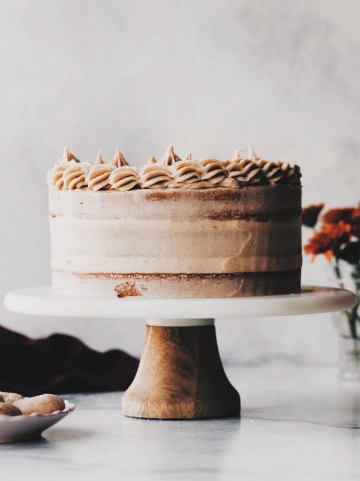

Wnm 608 M01: Snickerdoodle Cake

I baked this cake in 2019 for a photography project in collaboration with my friend Sally for her food styling and photography blog. I was the main photographer and was assited by George and lighting assistent, Bev. Sally styled the food and provided all the ingredients plus props along with a guided workshop describing the basics of food photography. The recipie is one of my favourites and I've made this frosting many times since, though not at this scale or level of finesse. Simply put, the frosting is nothing short of a dream. There is no need for any other frosting flavor again, ever.